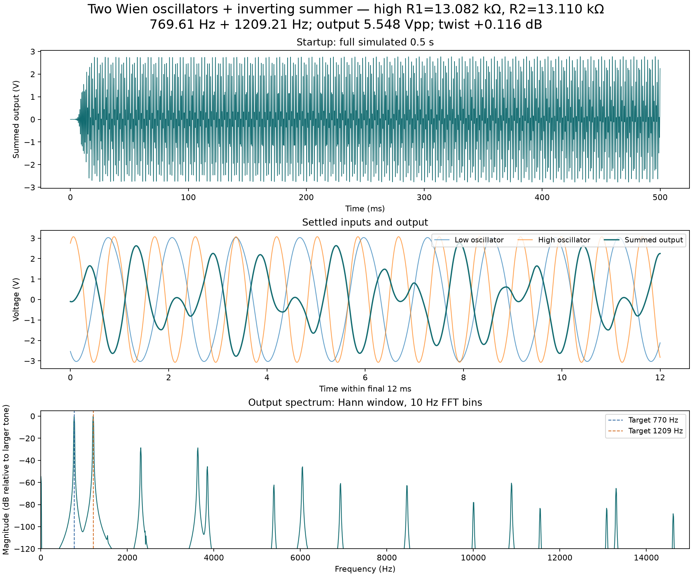
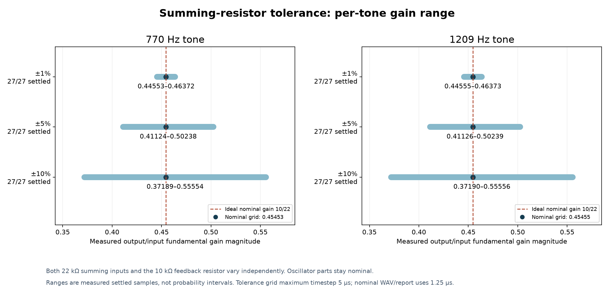
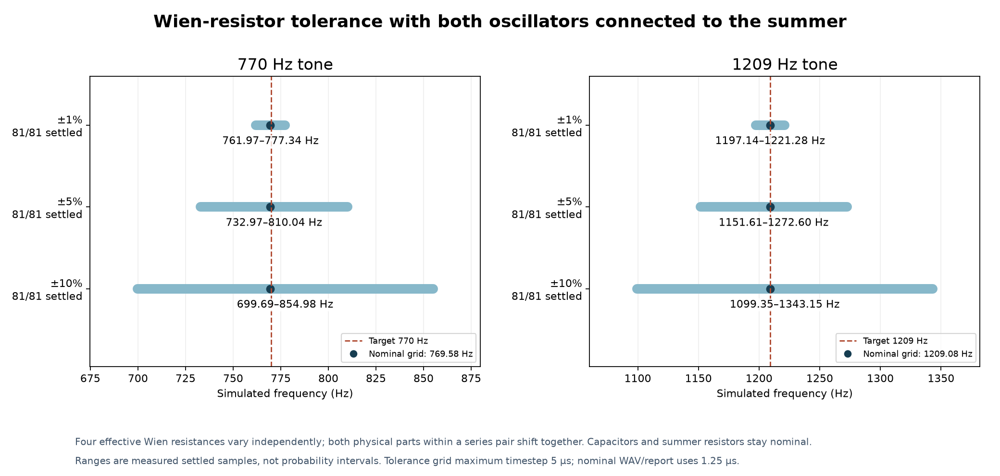
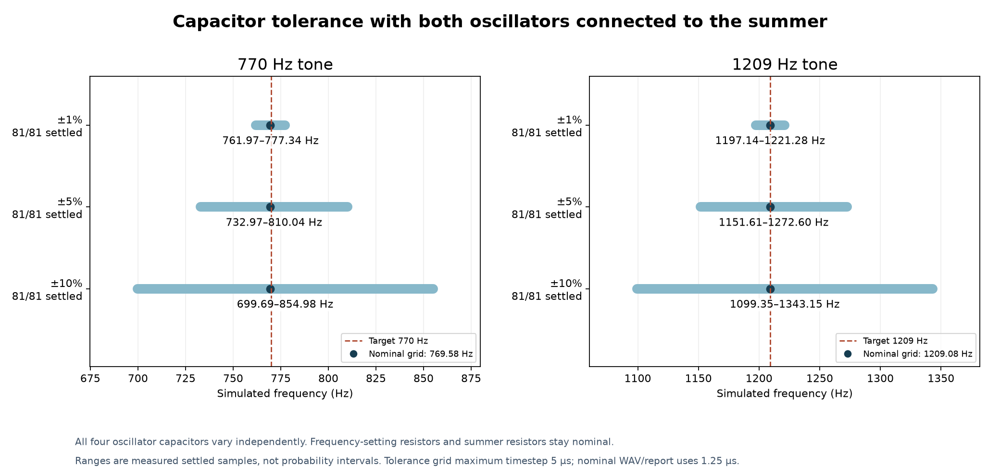
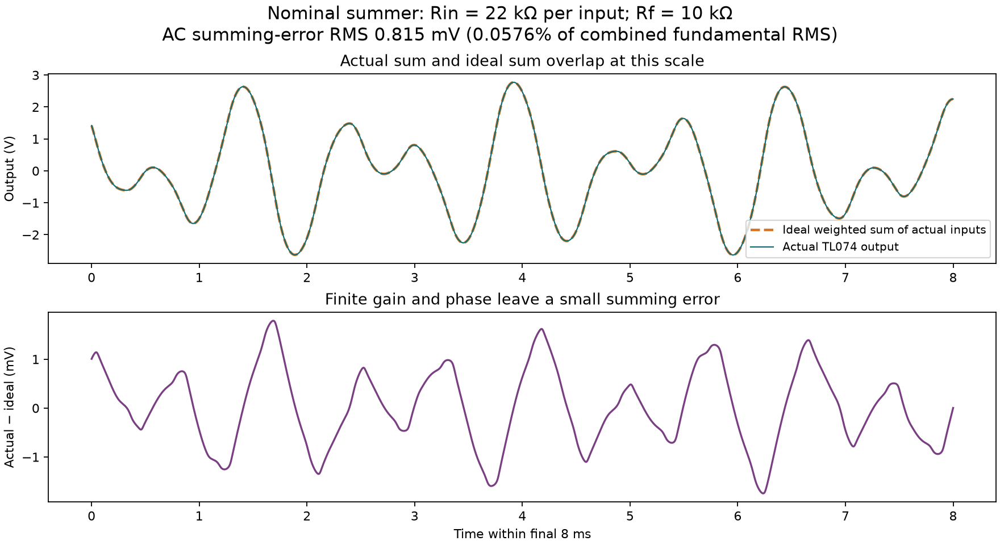
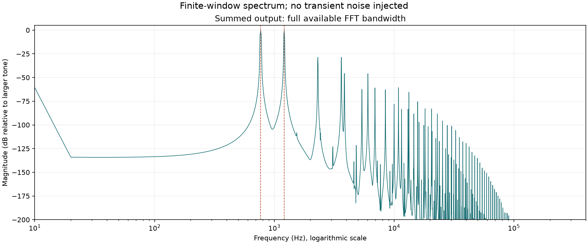

769.61 Hz + 1209.21 Hz; 5.548 Vpp into 1 MΩ.
Summer: 22 kΩ at each input, 10 kΩ feedback. High oscillator: R1=13,082 Ω, R2=13,110 Ω. Nominal waveform timestep 1.25 µs; original 5 µs table is separately checked without changing components.
Detailed results · Assumptions and running instructions · SPICE netlist
Download steady WAV (48 kHz) · Repeated 444 · 8 kHz alternative
Actual simulated output, common volume scaling and explicit audio antialiasing. Basic spectral checker returns 4; it is not a test of your specific decoder.





